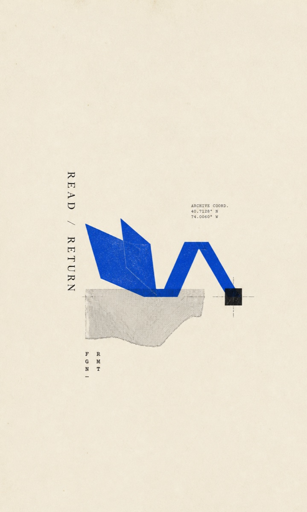

如何阅读一本书
用四层阅读和四个主动问题，决定一本书值得略读、分析阅读、主题阅读，还是及时停止。
打开主地图 →Reading Maps
先看全书结构，按问题深挖，最后回到原文。这里不是原书替代品，而是我在实际阅读中持续修正的导航。

先发布两本，新的地图随真实阅读增加。
用四层阅读和四个主动问题，决定一本书值得略读、分析阅读、主题阅读，还是及时停止。
打开主地图 →沿时期、问题和方法理解第一至第五卷，再进入已生成的主题或单篇深挖，最后回到原卷原篇。
打开主地图与深挖 →先判断全书讨论什么、怎样展开，以及版本和材料边界。
只有真实疑问出现时，才进入主题、篇章或外部背景。
地图用于定位和校正，不代替作者的完整论证与语境。